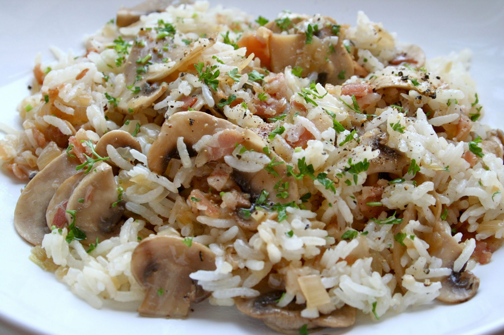
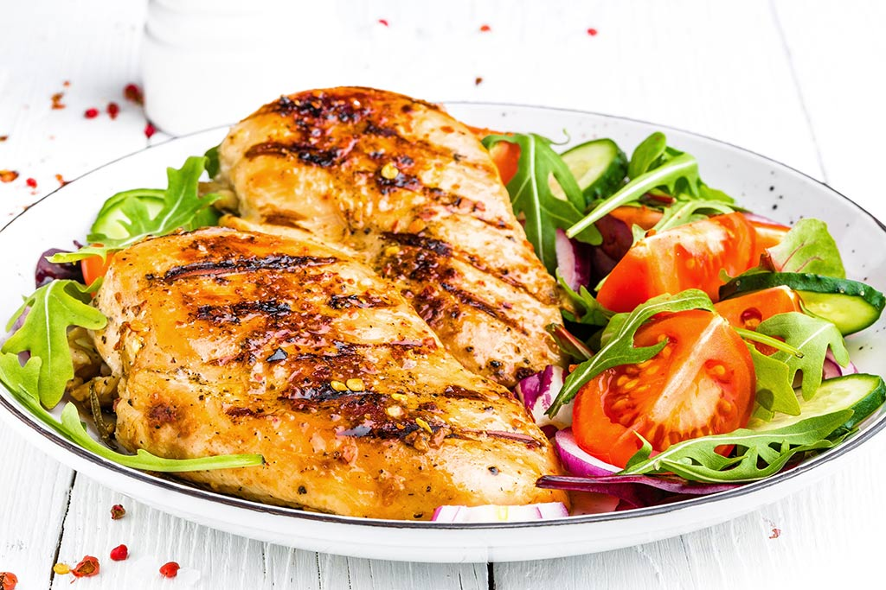

Esta página busca informar a las personas interesadas sobre diferentes tipos de comidas saludables que puede seguir una persona, ya sea porque se ha propuesto seguir una dieta, temas de salud, etc. Por supuesto, es bien sabido que perder la cabeza realizando menús complejos y que llevan su tiempo para prepararlos puede suponer un problema para aquellos no tan aficionados al mundo de la cocina, como a aquellos que no disponen del tiempo suficiente.
Por ello, vamos a presentar un menú fácil de realizar y que tienen un alto valor nutritivo.
Te han entrado ganas de comer este platillo? Haz click aqui para saber como!!